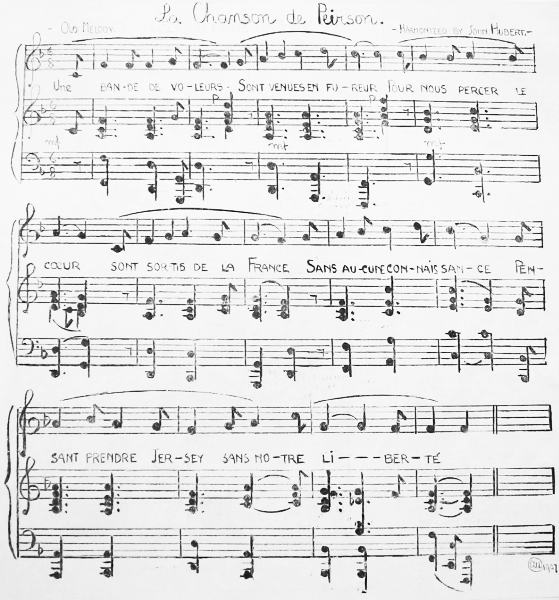

La Chanson de Peirson

|
Une bande de voleurs Sont venus en fureur Pour nous percer le coeur; Sont sortis de la France, Sans aucune connaissance, Pensant prendre Jersey Sans notre liberté. Le Baron de Rullecour Arrive au point du jour – Sans flute ni sans tambour. Arrivé sur la place, Nous faisant des menaces De brûler nos maisons Si nous ne nous rendions. Le Gouverneur surpris Son épée lui rendit; Allons! Messieurs, dit-il, A la Maison de Ville Nous serons plus tranquille, Et puis nous y ferons Capitulation. Après avoir capitulé Au Château faut aller! Venez, Monsieur Corbet, Le Château loin s'y rendre Voulut bien s'y défendre – Tire un coup de canon Pour saluer le Bourbon. Pendant tout ce temps-là Tous nos braves soldats S'assemblaient à grands pas Avec notre Milice- Braves gens de cette Ile, Qui se sont rassemblées Pour les exterminer. Puis au Marché arrivée La bataille s'est livrée – Les Jersiais ont gagné! Ont tué leur Général, Plusieurs de sa cabale – Soldats et officiers Sont rendues prisonniers. Nous eûmes le malheur De perdre un homme de coeur Tout rempli de valeur; Ce fut Major Peirson – Ce brave gentilhomme – Qui est mort pour son Roi, Tout couvert de lauriers. |

Passing one day by the blacksmith's shop of Mr. Philip Messervy, Faldouet, St. Martin's, I heard him singing a quaint melody. I went in and asked him what it was. He told me “c'est la chanson de Peirson.” To write down the tune as he sang it was the work of a few minutes. I am indebted to Mr. John Hubert, Organist of the Town Church and Conductor of the Choral Society, for writing the accompaniment. An interesting feature connected with the song in “le tems passé” was that whenever the soloist came to the last verse everybody stood up, with “hats off, gentlemen” in honour of Peirson. – Ed. Gavey 1907

"The Death of Major Peirson", John Singleton Copley
- Poetry in Jersey
- In Peirson's Days
- Apothéose du Major Peirson
- L'Autel de la Patrie!
- Peirson
- Patriotic Hymn, To be sung at all the Banquets in honour of Peirson
- 6 Janvier 1781
- Poésie Composée le 6 Janvier 1846, étant le 65e anniversaire de la Bataille de Jersey